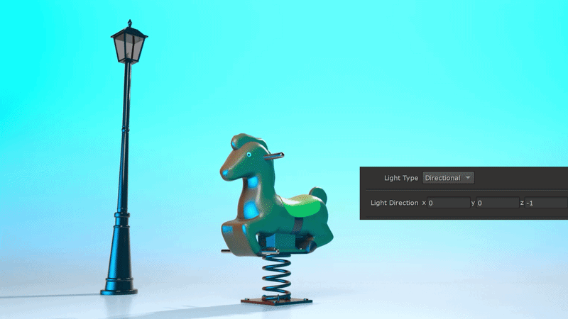
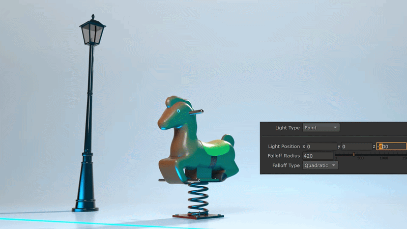
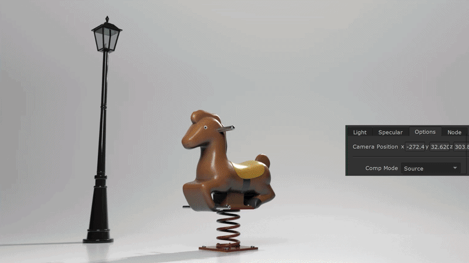

Demo
Goal
A Nuke gizmo for AOV-based relighting in compositing. Adds virtual lights to rendered scenes using Normal, Position, and Albedo passes.
Process
- Single Nuke Gizmo with a BlinkScript kernel that computes Lambertian diffuse and Blinn-Phong specular lighting from AOV passes.
- Supports Directional and Point lights with falloff, wrapped Lambert for soft terminators, Schlick Fresnel for edge highlights, and multiple compositing modes.



Technical Details
Blinn-Phong uses the halfway vector between light and view direction for more stable highlights.
Wrapped Lambert extends light coverage past the 90 degree terminator without increasing overall brightness.
Camera auto-detect reads Redshift EXR metadata and extracts camera position from the 4x4 transform matrix.